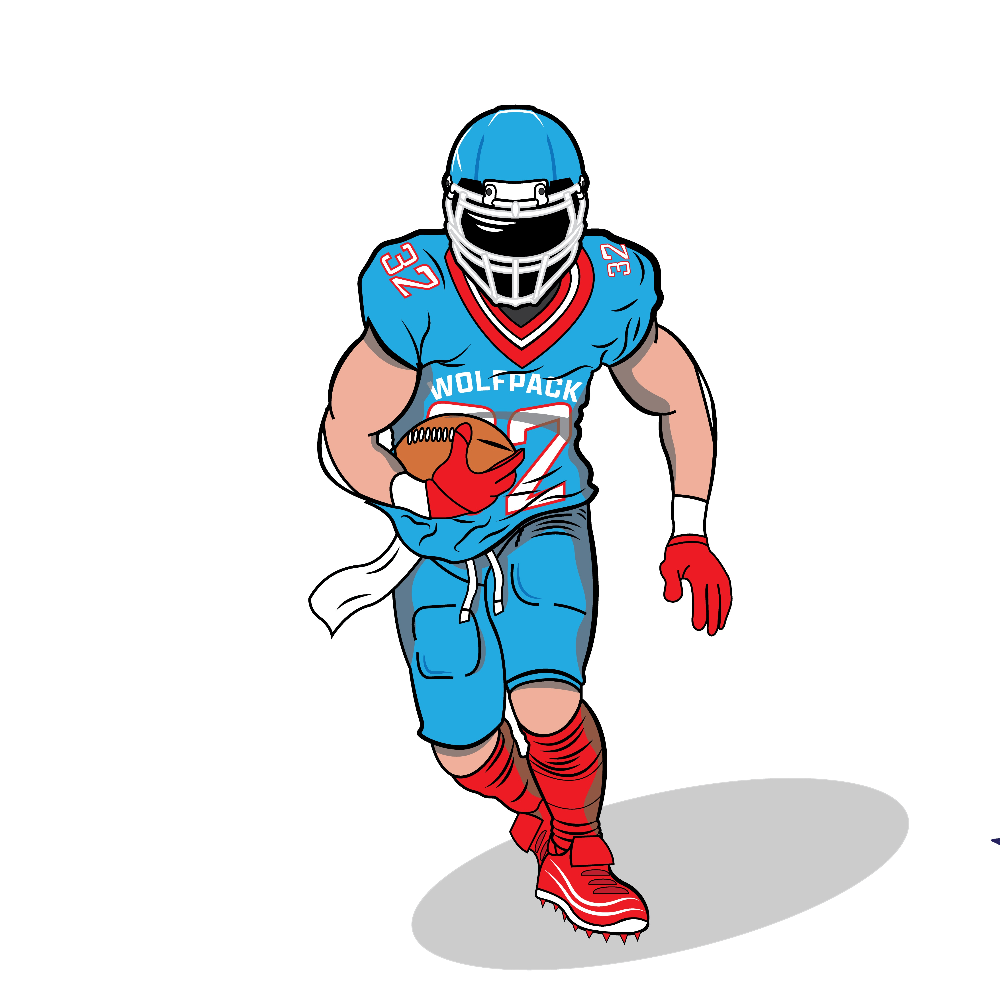
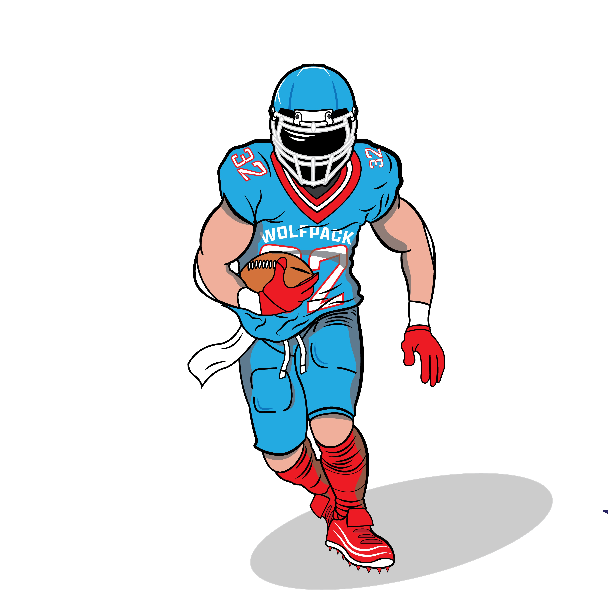

Born and raised in Grimsby, Ontario, Steven Bosnic is an interdisciplinary designer who focuses on branding, packaging, and illustration design. He comes from an arts and sports background, and he uses his background in his designs with more of a sporty style. Steven spends most of his time playing or watching sports mostly hockey and football.


 
